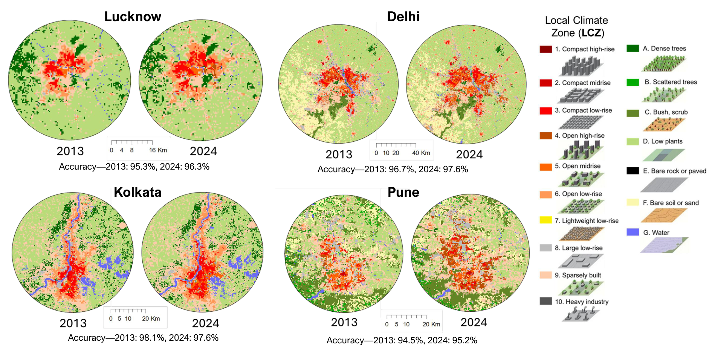
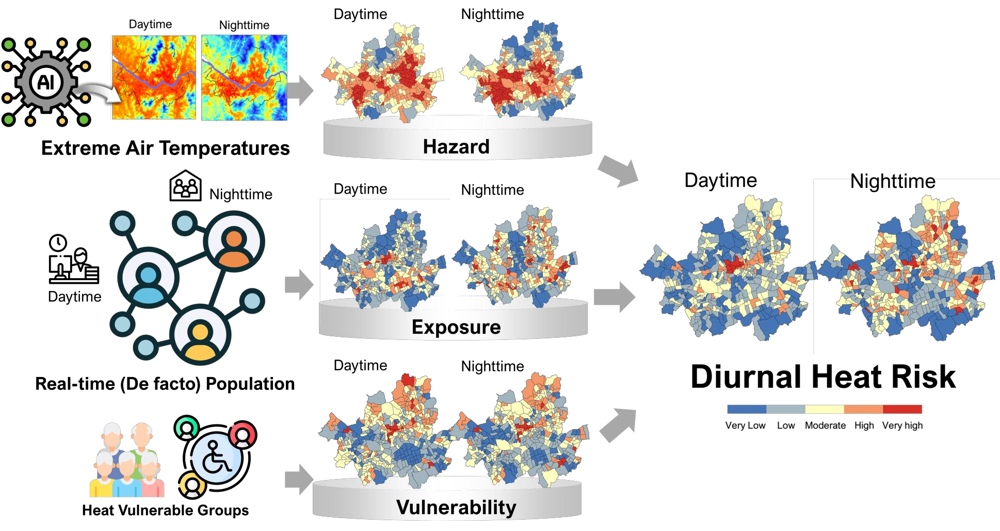
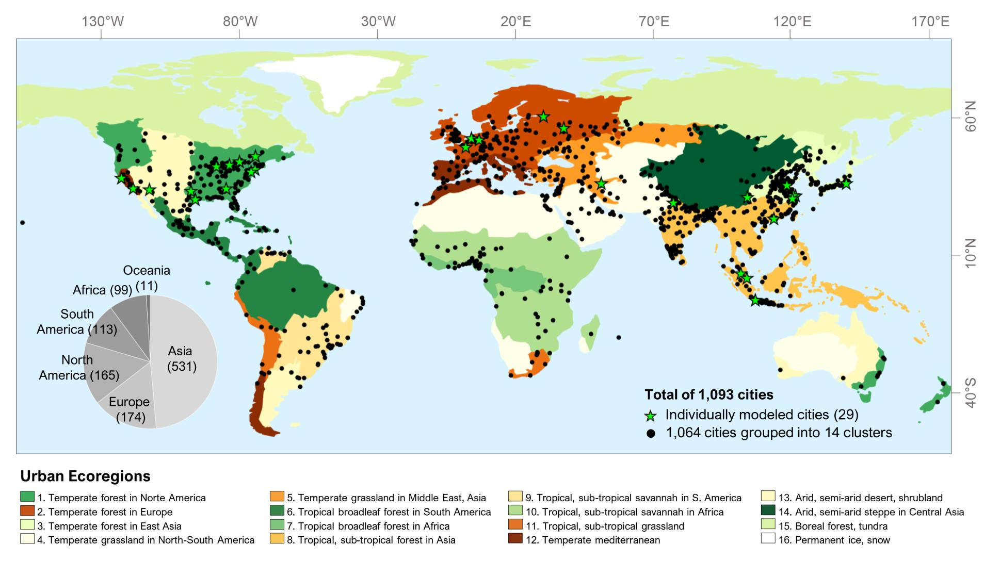
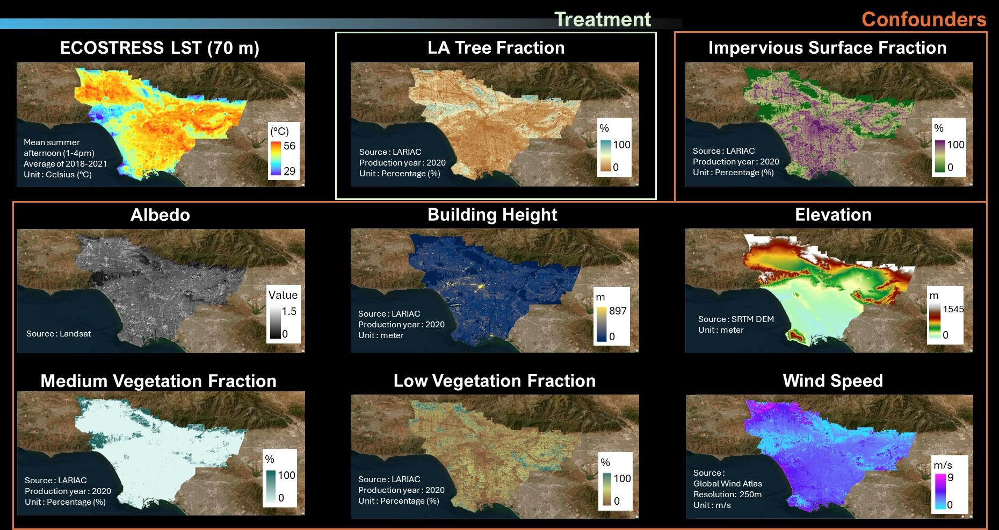

Our research
Understanding cities.
Informing their future.
Earth observation and GeoAI connect urban form, environmental change, and the people who experience them.
01 / Observe
Urban form & growth
How do the ways cities grow shape the heat they experience?
We use satellite imagery, building information, and machine learning to map Local Climate Zones (LCZs): a common framework for describing built and natural landscapes. These maps connect urban form and change to thermal conditions across cities.
Current work examines decadal urban growth and surface urban heat island change in Indian cities. Earlier studies developed LCZ classification methods using Landsat, Sentinel-2, and incomplete building datasets.
Approaches
Local Climate Zones · Satellite time series · Deep learning · Urban growth

02 / Assess
Heat risk & exposure
Who is exposed to urban heat, and how does risk change through the day?
The hottest surface is not always where people face the greatest heat risk. We estimate urban air temperature using satellite observations and geospatial AI, then combine temperature hazards with population exposure and social vulnerability.
Research in Seoul integrates extreme air temperatures and mobile-phone-based population data to characterize daytime and nighttime risk. Related work develops hourly temperature fields and improves thermal observations under cloudy conditions.
Approaches
Air temperature estimation · Dynamic population · Vulnerability · Thermal remote sensing

03 / Explain
Urban industry & carbon
How do the economic and carbon consequences of industrial growth differ across places?
Industrial land supports urban economies, but its environmental consequences vary across development contexts. We combine Earth observation, building data, nighttime lights, and machine learning to identify industrial land and study its links to economic activity and carbon emissions.
A global dataset maps industrial land at 10 m across more than 1,000 large cities from 2017 to 2023. Complementary research across ten countries examines how industrial expansion relates to economic growth and CO₂ emissions.
Approaches
Industrial land mapping · Multi-source GeoAI · Carbon emissions · Sustainable development
Explore the open dataset

04 / Act
Green infrastructure & cooling
Where could additional tree cover make the greatest difference?
We study how green infrastructure can support urban climate adaptation. Satellite thermal observations and environmental data help characterize spatial differences in tree cooling and identify promising locations for intervention.
Ongoing work uses double machine learning to estimate the effects of tree cover on land surface temperature, under causal identification assumptions. Applications examine venues, pedestrian routes, and bus stops in Los Angeles in the context of LA28.
Approaches
ECOSTRESS · Tree canopy · Double machine learning · Spatially targeted cooling
Research in progress

One connected framework
Earth Intelligence
for Sustainable Urban Futures
A research pathway from observing urban change to informing where action may be most effective.
Observe
Reveal urban change
Make urban form, growth, and transformation visible through Earth observation.
Assess
Understand dynamic risk
Combine climate hazards, population exposure, and social vulnerability.
Explain
Connect causes & outcomes
Investigate uneven environmental costs and benefits of urban development.
Act
Target climate solutions
Evaluate where green infrastructure and urban interventions could help most.
Connect with UEI Lab